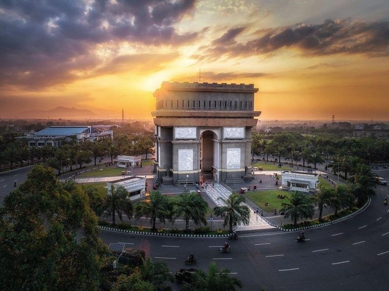
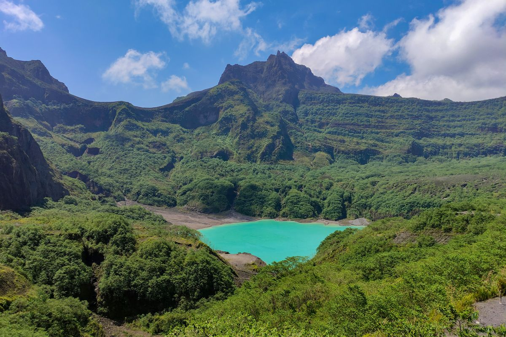
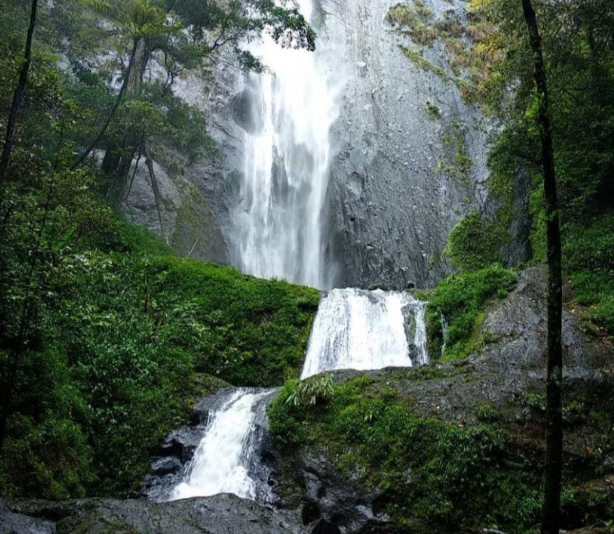
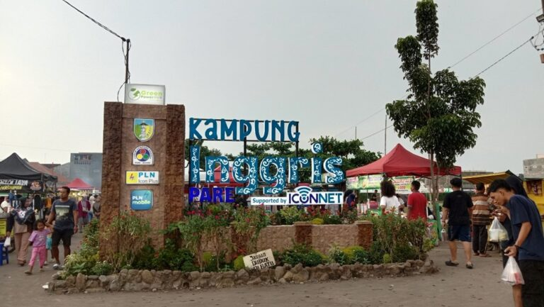

DESTINASI WISATA KABUPATEN KEDIRI
Monumen Simpang
Lima Gumul

Daya tarik monumen ini adalah kemiripannya dengan La'arch De Triomphe yang ada di Paris, Prancis. Terdapat sebuah relief yang menceritakan kehidupan masyarakat Kediri dari zaman dulu di monumen yang berada di Tugurejo, Ngasem, Kediri tersebut. Tempatnya sangat nyaman dengan adanya ruang hijau di sana. Tiap minggu ada CFD di area SLG dan ada pasar malam dengan banyak mainan dan kuliner di area situ. Terkadang juga digunakan tempat jogging. Kalian bisa menikmati Monumen Gumul atau memilih ke kawasan kuliner streetfood.
Gunung Kelud

Siapa yang tak mengenal Gunung Kelud? Wisata Gunung Kelud berada di perbatasan antara tiga kabupaten, yakni Kediri, Blitar, dan Malang. Jalur wisatanya berada di Rejomulyo, Sugihwaras, Kecamatan Ngancar, Kabupaten Kediri. Menariknya, jalan menuju kawah dan puncak Gunung Kelud juga mudah diakses, pengunjung bisa berjalan kaki maupun naik ojek jika ingin lebih mudah. Salah satu spot populer saat berada di Gunung Kelud adalah puncak dan kawahnya. Gunung ini memiliki tiga puncak utama, yakni Puncak Kelud, Puncak Gajah Mungkur, serta Puncak Sumbing. Di kawasan Puncak Gunung Kelud, pengunjung akan menjumpai danau kawah yang berwarna hijau toska. Pada waktu tertentu, air kawah tersebut bisa mengalami perubahan warna menjadi lebih pekat, sehingga menjadi daya tarik tersendiri.
Air Terjun Dolo

Air Terjun Dolo Besuki Kediri terletak di lereng Gunung Wilis yang menjulang tinggi hingga mencapai ketinggian 2.850 meter di atas permukaan laut. Air Terjun yang terletak di kaki gunung ini menyuguhkan kondisi alam yang unik dengan iklim sejuknya. Bahkan ketika cuaca buruk melanda, kabut seringkali akan menyelimuti daerah ini, membuatnya terasa semakin dingin. Namun, saat matahari bersinar cerah, tempat ini berubah menjadi tempat yang indah. Suara gemuruh air terjun, yang berpadu dengan rimbunnya pepohonan, menciptakan suasana sejuk dan segar di pegunungan. Semua ini menjadi semakin lengkap oleh kehadiran Air Terjun Dolo yang berlokasi di sekitar 1.275 meter di atas permukaan laut, buat kamu yang mau ke sini, siap-siap kakimu super capek yah karena akan melewati seribu tangga buat dari parkiran menuju air terjunnya.
Kampung Inggris

Berbeda dengan destinasi lainnya, kampung Inggris Pare, merupakan daerah yang menjadi pusat pembelajaran Bahasa Inggris yang terkenal di seluruh Indonesia melalui berbagai tempat kursus. Kampung Bahasa Inggris ini menawarkan beragam program pembelajaran untuk memenuhi kebutuhan para pelajar dengan berbagai tingkat kemampuan bahasa Inggris. Dari kursus TOEFL dan IELTS yang dirancang secara khusus untuk persiapan ujian internasional hingga program-program kreatif seperti pelatihan presentasi dan kursus bisnis berbahasa Inggris. Selain berupa offline, bisa juga mengikuti course online. Course di kampung inggris variatif, bisa seminggu, sebulan, beberapa bulan, dll tergantung program yang diambil. Hati-hati terkena `Pare Jahat` yaa.